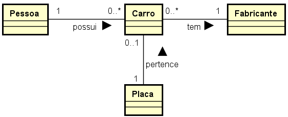

Disciplinas
ANÁLISE E PROJETO DE SOFTWARE ORIENTADO A OBJETOS. Concluído
Materiais
- 📅 Iniciado em quarta, 16 abr 2025, 21:34
- ✅ Estado Finalizada
- 📅 Concluída em quarta, 16 abr 2025, 23:05
- ⏳ Tempo empregado 1 hora 31 minutos
- 🎯 Avaliar 7,60 de um máximo de 10,00(76%)
Questionário ✅ ❌
Pergunta 1
Assinale a opção que representa uma situação inconsistente com o modelo conceitual a seguir:

Elaboração do autor.
- a. Existe uma instância de Carro associada a uma instância de Placa.
- b. Existe uma instância de Carro que não está associada à nenhuma instância de Fabricante.
- c. Existe uma instância de Pessoa associada a uma instância de Carro.
- d. Existe uma instância de Fabricante que não está associada à nenhuma instância de Carro.
- e. Existe uma instância de Pessoa associada a três instâncias de Carro.
📌 Explicação:
- Pessoa ↔ Carro:
- Uma pessoa (1) pode possuir zero ou mais carros (0..), e um carro pode ser possuído por uma ou mais pessoas (1..).
- Carro ↔ Fabricante:
- Um carro (0..*) deve estar associado a exatamente 1 fabricante (1).
- ➤ Isso significa que todo carro deve ter um fabricante.
- Carro ↔ Placa:
- Um carro pode ter no máximo uma placa (0..1) e uma placa pertence a exatamente um carro (1).
Pergunta 2
Considere o seguinte texto:
“Cada curso oferece uma série de disciplinas. Cada uma pode ter um ou mais módulos, mas uma mesma disciplina pode ser ofertada em diferentes cursos com diferentes números de módulos. Cada disciplina é ofertada por um professor. Eventualmente dois cursos podem ofertar a mesma disciplina. Nesse caso, o professor pode ser o mesmo ou pode ser outro.”
Qual dos modelos conceituais abaixo melhor representa esta situação?
Imagens elaboradas pelo autor.
- a. Modelo 1
- b. Modelo 2
- c. Modelo 3
- d. Modelo 4
- e. Nenhuma das alternativas.
.png)
.png)
.png)
.png)
📌 Explicação:
- Mostra a relação entre Curso, Disciplina e Professor através de Disciplina_Ofertada.
- Permite que a mesma disciplina em cursos diferentes tenha professores diferentes.
- Representa corretamente os módulos associados às disciplinas.
Pergunta 3
Qual/Quais situação(ões) a seguir poderia(m) ser modelada(s) como agregação entre conceitos?
- I. Um pai e seus filhos.
- II. Um álbum e suas músicas.
- III. Um círculo e seus pontos.
- IV. Uma locação e seu cliente.
- a. Apenas II e III.
- b. Apenas II e IV.
- c. Apenas III.
- d. Apenas I e IV.
- e. Apenas II.
📌 Explicação:
- Agregação é um tipo de associação que indica um relacionamento "todo-parte", onde a parte pode existir independentemente do todo. É representada por um losango vazio na UML.
- Ex.: um álbum e suas músicas (as músicas existem sem o álbum), um círculo e seus pontos (os pontos existem sem o círculo).
Pergunta 4
Faça as associações corretas:
Coleção de cenários relacionados típicos de fracasso que descreve a resposta do sistema quando ocorre alguma exceção (...).
Coleção de cenários relacionados típicos de sucesso e fracasso que descreve a utilização do sistema para atingir um objetivo específico (...).
Sequência de ações específicas e interações entre atores e o sistema (...).
Evento que impede que o caso de uso possa acontecer (...).
Algo que possui comportamento e interage com o sistema (...).
Opções: Cenário, Fluxo Alternativo, Exceção, Ator, Caso de Uso.
Resposta: ✅
Coleção de cenários relacionados típicos de fracasso que descreve a resposta do sistema quando ocorre alguma exceção Exceção❌.
Coleção de cenários relacionados típicos de sucesso e fracasso que descreve a utilização do sistema para atingir um objetivo específico Caso de Uso✅.
Sequência de ações específicas e interações entre atores e o sistema Cenário✅.
Evento que impede que o caso de uso possa acontecer Fluxo Alternativo❌.
Algo que possui comportamento e interage com o sistema Ator✅.
📌 Explicação:
- Exceção (Descreve respostas a falhas, erros ou situações anormais.)
- Caso de Uso (Agrupa fluxos principais, alternativos e exceções para um objetivo.)
- Cenário (Representa uma instância concreta de execução, como um fluxo específico dentro de um caso de uso.)
- Fluxo Alternativo (inclui condições que desviam o fluxo principal.)
- Ator (Qualquer entidade externa que interaja com o sistema, como usuários ou outros sistemas.)
Pergunta 5
Considere o diagrama de atividades que representa o funcionamento do negócio de uma loja de sapatos, conforme a figura a seguir:
.png)
Elaboração do autor.
Escolha qual opção indica uma representação adequada para registrar o pagamento, finalizar a venda e entregar os sapatos logo depois que o cliente pagar os sapatos:
- a. Incluir as atividades "Registrar Pagamento", "Finalizar Venda" e "Entregar Sapatos" na raia Vendedor.
- b. Incluir a atividade "Registrar Pagamento" na raia Vendedor e incluir a atividade "Finalizar Venda" na raia Cliente.
- c. Incluir as atividades "Registrar Pagamento" e "Finalizar Venda" na raia Cliente e incluir a atividade "Entregar Sapatos" na raia Vendedor.
- d. Incluir as atividades "Registrar Pagamento" e "Entregar Sapatos" na raia Vendedor e incluir atividade "Finalizar Venda" na raia Cliente.
- e. Incluir a atividade "Registrar Pagamento" na raia Cliente e incluir as atividades "Finalizar Venda" e "Entregar sapatos" na raia Vendedor.
📌 Explicação:
- Todas as atividades mencionadas são de responsabilidade do Vendedor (processamento do pagamento, conclusão da venda e entrega).
- O Cliente não participa ativamente dessas etapas no contexto do diagrama de atividades (sua ação principal é "Pagar sapatos", que já está representada).
- As outras opções distribuem as atividades de forma incoerente com as responsabilidades reais do fluxo.
Pergunta 6
De acordo com o caso de uso abaixo, responda (quadro elaborado pelo autor):
O que acontece se o usuário tentar cadastrar um fornecedor com um nome que já existe no banco de dados? Escolha a alternativa correta:
.png)
- a. O sistema informa que já existe um registro cadastrado com o mesmo nome e volta ao passo 2 do fluxo principal.
- b. O sistema limpa os campos preenchidos e volta ao passo 3 do fluxo principal.
- c. O sistema verifica se existem campos obrigatórios não preenchidos.
- d. O sistema retorna ao ambiente padrão do sistema.
- e. O sistema informa que o cadastro foi efetuado com sucesso.
📌 Explicação:
- No passo 6 do fluxo principal, o sistema verifica se já existe um cadastro com o mesmo nome.
- Se existir, o Fluxo Alternativo [6a] é acionado.
Pergunta 7
Qual/Quais situação(ões) a seguir poderia(m) ser modelada(s) como agregação entre conceitos?
- I. Uma receita e seus ingredientes.
- II. Uma venda e seu cliente.
- III. Um supervisor e seus subordinados.
- IV. Um curso e suas disciplinas.
- a. Apenas II e III.
- b. Apenas III.
- c. Apenas I e III.
- d. Apenas I e IV.
- e. Apenas I.
📌 Explicação:
- Os ingredientes existem independentemente da receita (ex.: sal, açúcar). A receita é composta por ingredientes, mas eles não dependem dela para existir.
- As disciplinas existem independentemente do curso (ex.: Matemática pode ser parte de vários cursos). O curso é composto por disciplinas, mas elas não dependem dele.
Pergunta 8
De acordo com o caso de uso abaixo, responda (quadro elaborado pelo autor):
.png)
Qual é a ação correta que o sistema deve tomar se o usuário clicar em "cancelar registro" durante o cadastro de um fornecedor? Escolha a alternativa correta:
- a. O sistema retorna ao passo 3 do fluxo principal.
- b. O sistema armazena os dados preenchidos.
- c. O ambiente de cadastro se fecha e o sistema volta ao passo 9 do fluxo principal.
- d. O sistema verifica se existem campos obrigatórios não preenchidos.
- e. O sistema solicita confirmação para cancelar o registro.
Pergunta 9
De acordo com a imagem abaixo, qual(is) característica(s) de OO este fragmento de modelagem representa? Selecione duas alternativas corretas:
Obs.: Cada alternativa errada que for marcada anula a pontuação que seria recebida por uma alternativa correta.
.png)
- a. Composição.
- b. Herança Simples.✅
- c. Herança Múltipla.
- d. Agregação.❌
- e. Associação simples.
📌 Explicação:
- Herança Simples (relação entre Veículo e seus subtipos):
- A imagem mostra que Carro, Caminhão e Moto são tipos específicos de Veículo, indicando uma relação de generalização/especialização. Isso é um exemplo claro de herança simples, onde as classes derivadas herdam de uma única classe base (Veículo).
- Agregação (relação entre Veículo e Peças):
- A relação entre Veículo e Peças sugere um relacionamento "todo-parte", onde as peças podem existir independentemente do veículo. Isso caracteriza uma agregação, representada por um losango vazio em diagramas UML.
Pergunta 10
De acordo com o caso de uso abaixo, responda (quadro elaborado pelo autor):
Desconsiderando reentradas em fluxos alternativos ou loops, quantos cenários únicos existem neste caso de uso?
- a. 5
- b. 2
- c. 1
- d. Nenhum
- e. 6
📌 Explicação:
- Cada fluxo alternativo representa um desvio distinto do fluxo principal, resultando em 6 cenários únicos (1 fluxo principal + 5 fluxos alternativos).
- Fluxo Principal Completo (passos 1 a 9):
- Cadastro bem-sucedido sem desvios.
- Fluxo Alternativo [5a]:
- Campos obrigatórios não preenchidos (passo 5 → 5a.1 → 5a.2 → volta ao passo 3).
- Fluxo Alternativo [6a]:
- Nome do fornecedor já cadastrado (passo 6 → 6a.1 → 6a.2 → volta ao passo 2).
- Fluxo Alternativo [2a]:
- Cancelamento do registro (passo 2 → 2a.1 → 2a.2 → passo 9).
- Fluxo Alternativo [3a]:
- Limpeza dos campos (passo 3 → 3a.1 → 3a.2 → 3a.3 → volta ao passo 3).
- Fluxo Alternativo [5b]:
- Campos não obrigatórios não preenchidos (passo 5 → 5b.1 → 5b.2 → 5b.3 → passo 9).